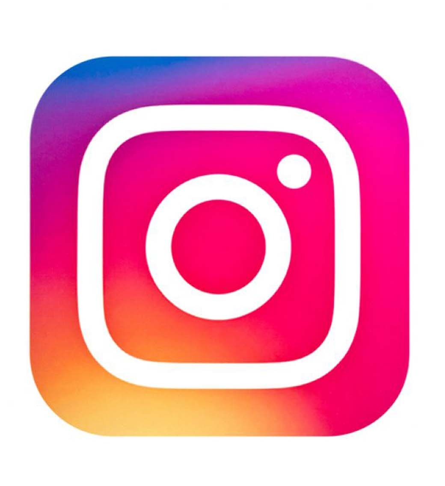

Our Facebook page is a vibrant hub where we connect with our community of eco-conscious individuals. It serves as a platform for us to share valuable information, updates, and engaging content related to our sustainable products and initiatives. By following our Facebook page, you can stay up-to-date with the latest news, promotions, and events. It's also a space for us to engage with our customers, answer questions, and foster meaningful conversations about environmental sustainability. Join our Facebook community and be a part of the movement towards a greener and more sustainable future.
Welcome to our Instagram page, where we showcase the beauty and eco-friendly essence of our brand. Here, we share captivating visuals that capture the essence of sustainable living and the joy of enjoying beverages with our eco-friendly mugs. Our Instagram feed is filled with inspiring images, lifestyle shots, and behind-the-scenes glimpses of our journey towards a greener planet. Follow us on Instagram to stay connected with our latest product releases, exciting collaborations, and stories of sustainable living. Join our Instagram community and be inspired to make a positive impact while sipping your favorite beverages. Let's create a more sustainable world together, one Instagram post at a time.
